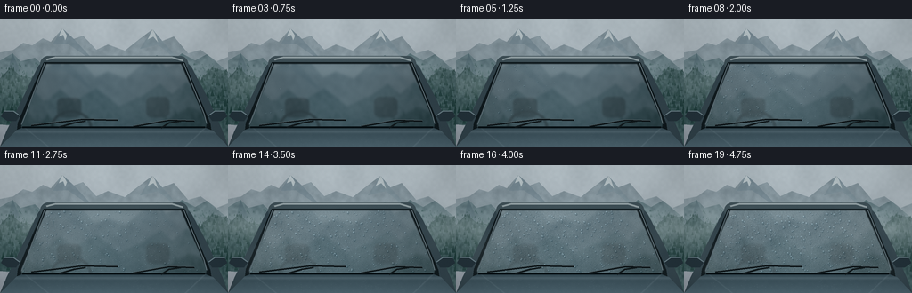
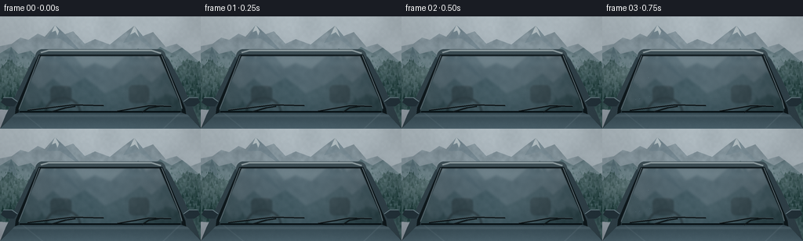

CODING AGENTS AS PIXEL WORLD MODELS
traex/GPT-6.1-Sol · phygen_114
点击播放 · 原生 RGB 像素
逐轮保存的候选
回放视频、检查图与代码变化。
每份候选均可单独播放。实际图片检查记录在下方工具轨迹中。
候选 01播放与检查图
点击播放 · 原生 RGB 像素


展开代码变化
--- 上一保存版本
+++ 本次保存版本
@@ -0,0 +1,264 @@
+from pathlib import Path
+import numpy as np
+from PIL import Image, ImageDraw, ImageFilter
+import artifact_io
+
+ROOT = Path(__file__).resolve().parent
+W,H,S = 256,144,3
+WW,HH=W*S,H*S
+rng=np.random.default_rng(11409)
+y,x=np.mgrid[0:HH,0:WW].astype(np.float32)
+x/=S;y/=S
+
+def smooth_noise(gw,gh,seed):
+ rr=np.random.default_rng(seed)
+ im=Image.fromarray(np.uint8(rr.random((gh,gw))*255))
+ return np.asarray(im.resize((WW,HH),Image.Resampling.BICUBIC),dtype=np.float32)/255
+
+noise=(smooth_noise(90,48,17)-.5)
+fine=(smooth_noise(380,210,42)-.5)
+
+def maskpoly(points):
+ im=Image.new('L',(WW,HH)); ImageDraw.Draw(im).polygon([(round(a*S),round(b*S)) for a,b in points],fill=255)
+ return np.asarray(im,dtype=np.float32)/255
+
+def over(a,c,m):
+ a[:]=a*(1-m[...,None])+np.asarray(c)*m[...,None]
+
+def pil_draw(a,callback):
+ im=Image.fromarray(np.uint8(np.clip(a,0,255)))
+ callback(ImageDraw.Draw(im))
+ return np.asarray(im,dtype=np.float32)
+
+# Clouded mountain light: a real landscape is outside the car, not a flat backdrop.
+sky=np.stack([176-0.22*y,188-.24*y,194-.22*y],axis=-1)
+sky+=noise[...,None]*5
+cloud=smooth_noise(12,6,345)
+base=sky+(cloud-.5)[...,None]*10
+
+# Irregular layered ridges and geological faces, with distance-dependent haze.
+mounts=[
+ ([(0,68),(0,38),(15,35),(26,27),(36,30),(48,22),(57,26),(70,11),(82,23),(93,19),(108,35),(121,29),(140,36),(155,24),(171,12),(182,25),(195,20),(211,39),(225,35),(243,48),(256,43),(256,98)],(130,146,154)),
+ ([(0,95),(0,47),(14,39),(23,48),(39,44),(55,59),(71,46),(86,58),(109,45),(133,63),(159,52),(176,41),(189,51),(204,39),(219,47),(232,40),(256,60),(256,109)],(92,115,122)),
+ ([(0,119),(0,67),(12,55),(22,64),(34,66),(47,80),(58,72),(76,89),(102,84),(133,102),(161,89),(179,79),(194,70),(208,63),(224,70),(238,55),(256,60),(256,144)],(50,77,79))]
+mount_masks=[]
+for k,(p,c) in enumerate(mounts):
+ m=maskpoly(p);mount_masks.append(m)
+ n=smooth_noise(52+30*k,27+15*k,66+k)
+ tex=(n-.5)*[15,21,24][k]+noise*8+fine*2
+ shade=np.array(c)[None,None,:]+tex[...,None]
+ shade+=((y-35)*.09)[...,None]
+ over(base,shade,m)
+
+# Rocky sides of the distant peaks; quiet snow traces in the highest gullies.
+facets=[([(70,11),(59,29),(76,28),(108,50),(81,21)],(113,132,142)),
+ ([(171,12),(157,34),(177,29),(208,54),(182,25)],(119,138,147)),
+ ([(70,11),(66,20),(71,18),(73,24),(75,19)],(192,202,205)),
+ ([(171,12),(166,23),(172,20),(177,26),(174,17)],(189,199,202)),
+ ([(204,39),(193,62),(207,52),(225,69)],(78,105,111)),
+ ([(14,39),(7,66),(24,71),(20,53)],(79,103,112))]
+for p,c in facets:
+ m=maskpoly(p)*(1-mount_masks[2])
+ over(base,np.array(c)[None,None,:]+noise[...,None]*9,m*.8)
+
+# A narrow wet mountain road and verge run beneath the parked vehicle.
+over(base,np.stack([77+noise*14,84+noise*14,83+noise*14],-1),maskpoly([(114,90),(134,90),(205,144),(25,144)]))
+
+# Many scale-correct conifers give the slopes a photographic, rather than polygonal, surface.
+im=Image.fromarray(np.uint8(base));d=ImageDraw.Draw(im)
+for depth,count in [(0,1050),(1,610)]:
+ for j in range(count):
+ tx=rng.uniform(-3,259);ty=rng.uniform(51,121)
+ if depth==0:
+ row=min(HH-1,int(ty*S));col=min(WW-1,max(0,int(tx*S)))
+ if mount_masks[1][row,col]<.5: continue
+ ht=rng.uniform(1.0,4.6)*(ty/90);c=np.array([66,94,97])+rng.uniform(-8,8)
+ else:
+ row=min(HH-1,int(ty*S));col=min(WW-1,max(0,int(tx*S)))
+ if mount_masks[2][row,col]<.5:continue
+ if tx>68 and tx<187 and ty>85:continue
+ ht=rng.uniform(2.7,8.8)*(ty/100);c=np.array([33,62,61])+rng.uniform(-8,11)
+ color=tuple(np.uint8(c)); wid=ht*.27
+ d.line([(tx*S,(ty-ht*.55)*S),(tx*S,(ty+.4)*S)],fill=color,width=max(1,int(.22*S)))
+ for f in [1.,.78,.55]:
+ d.polygon([(tx*S,(ty-ht)*S),((tx-wid*f)*S,(ty-ht*(1-f)) *S),((tx+wid*f)*S,(ty-ht*(1-f))*S)],fill=color)
+base=np.asarray(im,dtype=np.float32)
+
+# Soft suspended fog in the valley between dark, nearby trees.
+valley=np.exp(-((y-(65+5*np.sin(x/43)))/18)**2)*(.15+.13*smooth_noise(12,8,177))
+over(base,[164,182,185],valley)
+landscape=base.copy()
+
+# Front close-up of a graphite blue car. Outline, rounded roof and frame.
+car=Image.new('RGBA',(WW,HH),(0,0,0,0));d=ImageDraw.Draw(car)
+sc=lambda pts:[(int(a*S),int(b*S)) for a,b in pts]
+d.polygon(sc([(7,127),(29,82),(43,53),(50,46),(63,42),(194,42),(207,46),(215,55),(234,91),(250,127),(256,144),(0,144)]),fill=(48,65,73,255))
+d.rounded_rectangle((45*S,42*S,211*S,60*S),radius=10*S,fill=(60,77,84,255))
+d.line(sc([(52,46),(62,43.5),(193,43.5),(205,47)]),fill=(142,156,160),width=2*S)
+# Rubber surround is larger than the glass by a few pixels.
+d.polygon(sc([(49,49),(207,49),(236,118),(237,125),(19,125),(20,117)]),fill=(14,24,28,255))
+cararr=np.asarray(car,dtype=np.float32); carmask=cararr[:,:,3]/255
+
+# The true glass outline and its rounded corners.
+gim=Image.new('L',(WW,HH));gd=ImageDraw.Draw(gim)
+gd.polygon(sc([(52,51),(203,51),(232,117),(231,122),(24,122),(24,117)]),fill=255)
+gim=gim.filter(ImageFilter.GaussianBlur(.45*S))
+glassmask=np.asarray(gim,dtype=np.float32)/255
+# Curved glass, an interior silhouette, and reflections of the opposite ridge.
+reflection=np.asarray(Image.fromarray(np.uint8(landscape)).filter(ImageFilter.GaussianBlur(1.2*S)),dtype=np.float32)
+# Reflect hills into the lower portion of the windshield.
+rx=np.clip((x-128)*.94+128,0,255)
+ry=np.clip(22+(y-51)*.86,0,143)
+ref=reflection[(ry*S).astype(int).clip(0,HH-1),(rx*S).astype(int).clip(0,WW-1)]
+shade=np.clip((y-50)/73,0,1)
+glass=ref*(.48-.12*shade[...,None])+np.array([31,47,54])[None,None,:]*(.52+.12*shade[...,None])
+glass+=np.exp(-((x-117)/85)**2)[...,None]*np.array([6,11,13])
+# Headrests and steering wheel are dim shapes visible behind the reflective surface.
+interior=Image.new('L',(WW,HH));dd=ImageDraw.Draw(interior)
+dd.rounded_rectangle((64*S,89*S,91*S,111*S),radius=6*S,fill=55)
+dd.rounded_rectangle((164*S,88*S,190*S,111*S),radius=6*S,fill=49)
+dd.ellipse((57*S,103*S,103*S,142*S),outline=74,width=3*S)
+ins=np.asarray(interior.filter(ImageFilter.GaussianBlur(1.0*S)),dtype=np.float32)/255
+glass*=1-ins[...,None]
+# Gentle sky streak reflected in sloped glass.
+glow=np.exp(-((y-(58+(x-120)*.025))/6.0)**2)*.1
+over(glass,[165,187,195],glow)
+
+# Hood as a reflective sculpted surface, keeping two parked wiper blades apparent.
+hoodmask=maskpoly([(19,125),(24,123),(231,123),(239,126),(256,144),(0,144)])
+hood=np.stack([52+(y-124)*1.15,72+(y-124)*1.28,81+(y-124)*1.36],-1)
+hood+=noise[...,None]*2
+hood+=np.exp(-((y-127)/1.8)**2)[...,None]*18
+hood+=np.exp(-((x-(28+(y-123)*1.25))/1.2)**2)[...,None]*10
+hood+=np.exp(-((x-(230-(y-123)*1.05))/1.2)**2)[...,None]*12
+
+# Mirrors, seals, wipers and subtle reflective trim, all stationary.
+trim=Image.new('RGBA',(WW,HH),(0,0,0,0));td=ImageDraw.Draw(trim)
+for p in [[(22,109),(15,104),(4,104),(1,110),(8,115),(18,115)],[(234,109),(241,104),(252,104),(255,110),(248,115),(238,115)]]:
+ td.polygon(sc(p),fill=(35,50,58,255))
+ td.line(sc(p[:3]),fill=(104,125,133,255),width=S)
+td.line(sc([(50,50),(28,109),(24,119)]),fill=(94,111,119,255),width=S)
+td.line(sc([(206,50),(229,107),(232,118)]),fill=(105,122,129,255),width=S)
+td.line(sc([(25,122),(230,122)]),fill=(8,17,21,255),width=2*S)
+# Blades and articulated wiper arms, with crisp rubber edges.
+for points in [[(35,120),(93,113),(132,114)],[(150,121),(190,114),(218,115)]]:
+ td.line(sc(points),fill=(10,17,20,255),width=2*S)
+ td.line(sc([(a,b-.45) for a,b in points]),fill=(71,86,91,255),width=S)
+td.line(sc([(66,122),(83,117),(96,115)]),fill=(17,25,28,255),width=2*S)
+td.line(sc([(181,123),(190,117),(203,115)]),fill=(17,25,28,255),width=2*S)
+trimarr=np.asarray(trim,dtype=np.float32)
+
+# A persistent advected multi-scale fog field, not independent random frames.
+# Larger than the frame so translation never wraps visibly.
+fog_rng=np.random.default_rng(902)
+fogs=[]
+for sz,weight in [( (12,7),.54),((25,14),.27),((57,30),.13),((110,58),.06)]:
+ fim=Image.fromarray(np.uint8(fog_rng.random((sz[1],sz[0]))*255))
+ fogs.append((np.asarray(fim.resize((WW*3,HH*2),Image.Resampling.BICUBIC),dtype=np.float32)/255,weight))
+
+# Drops nucleate in place as the cold glass intercepts the damp fog.
+# Small beads are numerous; a few larger ones become mobile under gravity.
+drops=[]
+for i in range(2650):
+ cx=rng.uniform(25,232);cy=rng.uniform(52,120)
+ if glassmask[min(HH-1,int(cy*S)),min(WW-1,int(cx*S))]<.97:continue
+ big=rng.random()<.13
+ radius=rng.uniform(.63,1.52) if big else rng.uniform(.13,.50)
+ start=.08+.42*(cx-25)/207+rng.uniform(-.09,.32)
+ drops.append((cx,cy,radius,start,rng.random(),big))
+# Render a rounded transparent bead, with a refracted patch and asymmetric specular rim.
+def bead(a,under,cx,cy,r,opacity=1.,elong=1.):
+ if r<.105:return
+ pad=1.5
+ x0=max(0,int((cx-r-pad)*S));x1=min(WW,int((cx+r+pad)*S)+1)
+ y0=max(0,int((cy-r*elong-pad)*S));y1=min(HH,int((cy+r*elong+pad)*S)+1)
+ if x1<=x0 or y1<=y0:return
+ xx=(x[y0:y1,x0:x1]-cx)/r; yy=(y[y0:y1,x0:x1]-cy)/(r*elong)
+ q=xx*xx+yy*yy
+ m=np.clip((1.15-q)*3.5,0,1)*opacity*glassmask[y0:y1,x0:x1]
+ if not np.any(m):return
+ refrx=np.clip(((cx+xx*r*.40+.5)*S).astype(int),0,WW-1)
+ refry=np.clip(((cy+yy*r*.45-1.5)*S).astype(int),0,HH-1)
+ color=under[refry,refrx].copy()
+ color=color*.91+np.array([4,8,10])
+ edge=np.exp(-((np.sqrt(q)-.86)/.15)**2)
+ directional=np.clip((-xx-yy)*.6,-1,1)
+ color+=edge[...,None]*(directional[...,None]*32-8)
+ # Reflected overcast sky: tiny top-left highlights, dark lower meniscus.
+ glint=np.exp(-((xx+.32)**2+(yy+.48)**2)/.055)
+ color+=glint[...,None]*np.array([119,126,128])
+ bottom=np.exp(-((xx-.20)**2+(yy-.69)**2)/.065)
+ color-=bottom[...,None]*20
+ old=a[y0:y1,x0:x1]
+ old[:]=old*(1-m[...,None])+color*m[...,None]
+
+frames=[]
+for fi in range(20):
+ t=fi/19
+ # Valley mist billows steadily into contact with the cold windshield.
+ fg=np.zeros((HH,WW),np.float32)
+ for field,wt in fogs:
+ shift=int((.65*t)*WW)
+ fg+=wt*field[HH//3:HH//3+HH,shift:shift+WW]
+ bank=np.exp(-((y-(69+9*np.sin((x-70*t)/65)))/22)**2)
+ veil=np.clip((fg-.22)*1.5,0,.85)*bank*(.12+.53*t)
+ a=landscape.copy()
+ over(a,[182,196,199],veil)
+ over(a,cararr[:,:,:3],carmask)
+ # Surface mist starts at the exposed left edge and advances across the glass.
+ arrival=.07+.37*(x-24)/208
+ age=np.clip((t-arrival)/.64,0,1)
+ cloudy=age**.76*(.36+.17*smooth_noise(22,14,87))
+ g=glass.copy()
+ gblur=np.asarray(Image.fromarray(np.uint8(g)).filter(ImageFilter.GaussianBlur((.15+t*1.7)*S)),dtype=np.float32)
+ g=g*(1-cloudy[...,None]*.85)+gblur*cloudy[...,None]*.85
+ over(g,[144,162,168],cloudy*.67)
+ # A frosted-looking layer of very fine liquid droplets scatters cool daylight.
+ micro=(smooth_noise(330,185,700)-.5)
+ g+=micro[...,None]*age[...,None]*11
+ # Fog itself is visible as weak wisps reflected off the glass while approaching it.
+ over(g,[182,197,201],veil*.25)
+ under=g.copy()
+ for cx,cy,rad,start,phase,big in drops:
+ dt=t-start
+ if dt<=0:continue
+ growth=np.clip(dt/.37,0,1)
+ rr=rad*(.18+.82*growth**.7)
+ run=0
+ if big and rad>1.14:
+ run=max(0,dt-.41)**1.55*(21+12*phase)
+ yy=cy+run
+ if yy>120:continue
+ xx=cx+np.sin(run*.22+phase*6.28)*min(run*.045,.45)
+ if run>.8:
+ # Wet tracks after coalesced drops overcome surface pinning.
+ lo=max(0,int((cy-.2)*S));hi=min(HH,int(yy*S))
+ aa=max(0,int((cx-.40)*S));bb=min(WW,int((cx+.40)*S)+1)
+ if hi>lo:
+ lane=np.exp(-((x[lo:hi,aa:bb]-cx)/.27)**2)*.13
+ g[lo:hi,aa:bb]*=1-lane[...,None]
+ bead(g,under,xx,yy,rr,min(1,dt*11),1+min(run*.016,.3))
+ over(a,g,glassmask)
+ # Billowing exterior fog stays translucent so the glass transformation remains legible.
+ front=np.clip((fg-.32)*1.5,0,.65)*np.exp(-((y-88)/37)**2)*(.025+.16*t)
+ over(a,[183,198,200],front)
+ over(a,hood,hoodmask)
+ over(a,trimarr[:,:,:3],trimarr[:,:,3]/255)
+ # Tiny water beads on the upper hood anchor the outdoor dampness.
+ for j in range(105):
+ rrng=np.random.default_rng(j+282)
+ hx=rrng.uniform(25,230);hy=rrng.uniform(129,143);r=rrng.uniform(.10,.36)
+ # Low contrast silver highlights, elongated by perspective.
+ bbox=[int((hx-r)*S),int((hy-r*.45)*S),int((hx+r)*S)+1,int((hy+r*.45)*S)+1]
+ # Draw only the small reflected sky accents; these are out of focus.
+ xx0,yy0,xx1,yy1=bbox
+ if xx1>xx0 and yy1>yy0:
+ a[yy0:yy1,xx0:xx1]+=3.0+4*t
+ # Restrained vignette and fixed fine sensor grain, with no framewise shimmer.
+ vig=1-.10*((x-128)/150)**2-.055*((y-68)/92)**2
+ a=a*vig[...,None]+fine[...,None]*1.7
+ out=Image.fromarray(np.uint8(np.clip(a,0,255))).resize((W,H),Image.Resampling.LANCZOS)
+ frames.append(np.asarray(out,dtype=np.uint8))
+
+artifact_io.save(np.stack(frames),ROOT)
+print('Saved 20 RGB frames at 256 x 144, 4 fps.')
可观测工具轨迹
实际执行的命令与返回图片。
命令 1exit 0
/bin/bash -lc 'ls -la && cat prompt.txt && cat GENERATION_RULES.md && cat task_spec.json'
命令 2exit 0
/bin/bash -lc "cat artifact_io.py && python - <<'PY' import numpy,PIL print(numpy.__version__, PIL.__version__) PY"
命令 3exit 0
/bin/bash -lc "cat > generate.py <<'PY'
from pathlib import Path
import numpy as np
from PIL import Image, ImageDraw, ImageFilter
import artifact_io
ROOT = Path(__file__).resolve().parent
W,H,S = 256,144,3
WW,HH=W*S,H*S
rng=np.random.default_rng(11409)
y,x=np.mgrid[0:HH,0:WW].astype(np.float32)
x/=S;y/=S
def smooth_noise(gw,gh,seed):
rr=np.random.default_rng(seed)
im=Image.fromarray(np.uint8(rr.random((gh,gw))*255))
return np.asarray(im.resize((WW,HH),Image.Resampling.BICUBIC),dtype=np.float32)/255
noise=(smooth_noise(90,48,17)-.5)
fine=(smooth_noise(380,210,42)-.5)
def maskpoly(points):
im=Image.new('L',(WW,HH)); ImageDraw.Draw(im).polygon([(round(a*S),round(b*S)) for a,b in points],fill=255)
return np.asarray(im,dtype=np.float32)/255
def over(a,c,m):
a[:]=a*(1-m[...,None])+np.asarray(c)*m[...,None]
def pil_draw(a,callback):
im=Image.fromarray(np.uint8(np.clip(a,0,255)))
callback(ImageDraw.Draw(im))
return np.asarray(im,dtype=np.float32)
# Clouded mountain light: a real landscape is outside the car, not a flat backdrop.
sky=np.stack([176-0.22*y,188-.24*y,194-.22*y],axis=-1)
sky+=noise[...,None]*5
cloud=smooth_noise(12,6,345)
base=sky+(cloud-.5)[...,None]*10
# Irregular layered ridges and geological faces, with distance-dependent haze.
mounts=[
([(0,68),(0,38),(15,35),(26,27),(36,30),(48,22),(57,26),(70,11),(82,23),(93,19),(108,35),(121,29),(140,36),(155,24),(171,12),(182,25),(195,20),(211,39),(225,35),(243,48),(256,43),(256,98)],(130,146,154)),
([(0,95),(0,47),(14,39),(23,48),(39,44),(55,59),(71,46),(86,58),(109,45),(133,63),(159,52),(176,41),(189,51),(204,39),(219,47),(232,40),(256,60),(256,109)],(92,115,122)),
([(0,119),(0,67),(12,55),(22,64),(34,66),(47,80),(58,72),(76,89),(102,84),(133,102),(161,89),(179,79),(194,70),(208,63),(224,70),(238,55),(256,60),(256,144)],(50,77,79))]
mount_masks=[]
for k,(p,c) in enumerate(mounts):
m=maskpoly(p);mount_masks.append(m)
n=smooth_noise(52+30*k,27+15*k,66+k)
tex=(n-.5)*[15,21,24][k]+noise*8+fine*2
shade=np.array(c)[None,None,:]+tex[...,None]
shade+=((y-35)*.09)[...,None]
over(base,shade,m)
# Rocky sides of the distant peaks; quiet snow traces in the highest gullies.
facets=[([(70,11),(59,29),(76,28),(108,50),(81,21)],(113,132,142)),
([(171,12),(157,34),(177,29),(208,54),(182,25)],(119,138,147)),
([(70,11),(66,20),(71,18),(73,24),(75,19)],(192,202,205)),
([(171,12),(166,23),(172,20),(177,26),(174,17)],(189,199,202)),
([(204,39),(193,62),(207,52),(225,69)],(78,105,111)),
([(14,39),(7,66),(24,71),(20,53)],(79,103,112))]
for p,c in facets:
m=maskpoly(p)*(1-mount_masks[2])
over(base,np.array(c)[None,None,:]+noise[...,None]*9,m*.8)
# A narrow wet mountain road and verge run beneath the parked vehicle.
over(base,np.stack([77+noise*14,84+noise*14,83+noise*14],-1),maskpoly([(114,90),(134,90),(205,144),(25,144)]))
# Many scale-correct conifers give the slopes a photographic, rather than polygonal, surface.
im=Image.fromarray(np.uint8(base));d=ImageDraw.Draw(im)
for depth,count in [(0,1050),(1,610)]:
for j in range(count):
tx=rng.uniform(-3,259);ty=rng.uniform(51,121)
if depth==0:
row=min(HH-1,int(ty*S));col=min(WW-1,max(0,int(tx*S)))
if mount_masks[1][row,col]<.5: continue
ht=rng.uniform(1.0,4.6)*(ty/90);c=np.array([66,94,97])+rng.uniform(-8,8)
else:
row=min(HH-1,int(ty*S));col=min(WW-1,max(0,int(tx*S)))
if mount_masks[2][row,col]<.5:continue
if tx>68 and tx<187 and ty>85:continue
ht=rng.uniform(2.7,8.8)*(ty/100);c=np.array([33,62,61])+rng.uniform(-8,11)
color=tuple(np.uint8(c)); wid=ht*.27
d.line([(tx*S,(ty-ht*.55)*S),(tx*S,(ty+.4)*S)],fill=color,width=max(1,int(.22*S)))
for f in [1.,.78,.55]:
d.polygon([(tx*S,(ty-ht)*S),((tx-wid*f)*S,(ty-ht*(1-f)) *S),((tx+wid*f)*S,(ty-ht*(1-f))*S)],fill=color)
base=np.asarray(im,dtype=np.float32)
# Soft suspended fog in the valley between dark, nearby trees.
valley=np.exp(-((y-(65+5*np.sin(x/43)))/18)**2)*(.15+.13*smooth_noise(12,8,177))
over(base,[164,182,185],valley)
landscape=base.copy()
# Front close-up of a graphite blue car. Outline, rounded roof and frame.
car=Image.new('RGBA',(WW,HH),(0,0,0,0));d=ImageDraw.Draw(car)
sc=lambda pts:[(int(a*S),int(b*S)) for a,b in pts]
d.polygon(sc([(7,127),(29,82),(43,53),(50,46),(63,42),(194,42),(207,46),(215,55),(234,91),(250,127),(256,144),(0,144)]),fill=(48,65,73,255))
d.rounded_rectangle((45*S,42*S,211*S,60*S),radius=10*S,fill=(60,77,84,255))
d.line(sc([(52,46),(62,43.5),(193,43.5),(205,47)]),fill=(142,156,160),width=2*S)
# Rubber surround is larger than the glass by a few pixels.
d.polygon(sc([(49,49),(207,49),(236,118),(237,125),(19,125),(20,117)]),fill=(14,24,28,255))
cararr=np.asarray(car,dtype=np.float32); carmask=cararr[:,:,3]/255
# The true glass outline and its rounded corners.
gim=Image.new('L',(WW,HH));gd=ImageDraw.Draw(gim)
gd.polygon(sc([(52,51),(203,51),(232,117),(231,122),(24,122),(24,117)]),fill=255)
gim=gim.filter(ImageFilter.GaussianBlur(.45*S))
glassmask=np.asarray(gim,dtype=np.float32)/255
# Curved glass, an interior silhouette, and reflections of the opposite ridge.
reflection=np.asarray(Image.fromarray(np.uint8(landscape)).filter(ImageFilter.GaussianBlur(1.2*S)),dtype=np.float32)
# Reflect hills into the lower portion of the windshield.
rx=np.clip((x-128)*.94+128,0,255)
ry=np.clip(22+(y-51)*.86,0,143)
ref=reflection[(ry*S).astype(int).clip(0,HH-1),(rx*S).astype(int).clip(0,WW-1)]
shade=np.clip((y-50)/73,0,1)
glass=ref*(.48-.12*shade[...,None])+np.array([31,47,54])[None,None,:]*(.52+.12*shade[...,None])
glass+=np.exp(-((x-117)/85)**2)[...,None]*np.array([6,11,13])
# Headrests and steering wheel are dim shapes visible behind the reflective surface.
interior=Image.new('L',(WW,HH));dd=ImageDraw.Draw(interior)
dd.rounded_rectangle((64*S,89*S,91*S,111*S),radius=6*S,fill=55)
dd.rounded_rectangle((164*S,88*S,190*S,111*S),radius=6*S,fill=49)
dd.ellipse((57*S,103*S,103*S,142*S),outline=74,width=3*S)
ins=np.asarray(interior.filter(ImageFilter.GaussianBlur(1.0*S)),dtype=np.float32)/255
glass*=1-ins[...,None]
# Gentle sky streak reflected in sloped glass.
glow=np.exp(-((y-(58+(x-120)*.025))/6.0)**2)*.1
over(glass,[165,187,195],glow)
# Hood as a reflective sculpted surface, keeping two parked wiper blades apparent.
hoodmask=maskpoly([(19,125),(24,123),(231,123),(239,126),(256,144),(0,144)])
hood=np.stack([52+(y-124)*1.15,72+(y-124)*1.28,81+(y-124)*1.36],-1)
hood+=noise[...,None]*2
hood+=np.exp(-((y-127)/1.8)**2)[...,None]*18
hood+=np.exp(-((x-(28+(y-123)*1.25))/1.2)**2)[...,None]*10
hood+=np.exp(-((x-(230-(y-123)*1.05))/1.2)**2)[...,None]*12
# Mirrors, seals, wipers and subtle reflective trim, all stationary.
trim=Image.new('RGBA',(WW,HH),(0,0,0,0));td=ImageDraw.Draw(trim)
for p in [[(22,109),(15,104),(4,104),(1,110),(8,115),(18,115)],[(234,109),(241,104),(252,104),(255,110),(248,115),(238,115)]]:
td.polygon(sc(p),fill=(35,50,58,255))
td.line(sc(p[:3]),fill=(104,125,133,255),width=S)
td.line(sc([(50,50),(28,109),(24,119)]),fill=(94,111,119,255),width=S)
td.line(sc([(206,50),(229,107),(232,118)]),fill=(105,122,129,255),width=S)
td.line(sc([(25,122),(230,122)]),fill=(8,17,21,255),width=2*S)
# Blades and articulated wiper arms, with crisp rubber edges.
for points in [[(35,120),(93,113),(132,114)],[(150,121),(190,114),(218,115)]]:
td.line(sc(points),fill=(10,17,20,255),width=2*S)
td.line(sc([(a,b-.45) for a,b in points]),fill=(71,86,91,255),width=S)
td.line(sc([(66,122),(83,117),(96,115)]),fill=(17,25,28,255),width=2*S)
td.line(sc([(181,123),(190,117),(203,115)]),fill=(17,25,28,255),width=2*S)
trimarr=np.asarray(trim,dtype=np.float32)
# A persistent advected multi-scale fog field, not independent random frames.
# Larger than the frame so translation never wraps visibly.
fog_rng=np.random.default_rng(902)
fogs=[]
for sz,weight in [( (12,7),.54),((25,14),.27),((57,30),.13),((110,58),.06)]:
fim=Image.fromarray(np.uint8(fog_rng.random((sz[1],sz[0]))*255))
fogs.append((np.asarray(fim.resize((WW*3,HH*2),Image.Resampling.BICUBIC),dtype=np.float32)/255,weight))
# Drops nucleate in place as the cold glass intercepts the damp fog.
# Small beads are numerous; a few larger ones become mobile under gravity.
drops=[]
for i in range(2650):
cx=rng.uniform(25,232);cy=rng.uniform(52,120)
if glassmask[min(HH-1,int(cy*S)),min(WW-1,int(cx*S))]<.97:continue
big=rng.random()<.13
radius=rng.uniform(.63,1.52) if big else rng.uniform(.13,.50)
start=.08+.42*(cx-25)/207+rng.uniform(-.09,.32)
drops.append((cx,cy,radius,start,rng.random(),big))
# Render a rounded transparent bead, with a refracted patch and asymmetric specular rim.
def bead(a,under,cx,cy,r,opacity=1.,elong=1.):
if r<.105:return
pad=1.5
x0=max(0,int((cx-r-pad)*S));x1=min(WW,int((cx+r+pad)*S)+1)
y0=max(0,int((cy-r*elong-pad)*S));y1=min(HH,int((cy+r*elong+pad)*S)+1)
if x1<=x0 or y1<=y0:return
xx=(x[y0:y1,x0:x1]-cx)/r; yy=(y[y0:y1,x0:x1]-cy)/(r*elong)
q=xx*xx+yy*yy
m=np.clip((1.15-q)*3.5,0,1)*opacity*glassmask[y0:y1,x0:x1]
if not np.any(m):return
refrx=np.clip(((cx+xx*r*.40+.5)*S).astype(int),0,WW-1)
refry=np.clip(((cy+yy*r*.45-1.5)*S).astype(int),0,HH-1)
color=under[refry,refrx].copy()
color=color*.91+np.array([4,8,10])
edge=np.exp(-((np.sqrt(q)-.86)/.15)**2)
directional=np.clip((-xx-yy)*.6,-1,1)
color+=edge[...,None]*(directional[...,None]*32-8)
# Reflected overcast sky: tiny top-left highlights, dark lower meniscus.
glint=np.exp(-((xx+.32)**2+(yy+.48)**2)/.055)
color+=glint[...,None]*np.array([119,126,128])
bottom=np.exp(-((xx-.20)**2+(yy-.69)**2)/.065)
color-=bottom[...,None]*20
old=a[y0:y1,x0:x1]
old[:]=old*(1-m[...,None])+color*m[...,None]
frames=[]
for fi in range(20):
t=fi/19
# Valley mist billows steadily into contact with the cold windshield.
fg=np.zeros((HH,WW),np.float32)
for field,wt in fogs:
shift=int((.65*t)*WW)
fg+=wt*field[HH//3:HH//3+HH,shift:shift+WW]
bank=np.exp(-((y-(69+9*np.sin((x-70*t)/65)))/22)**2)
veil=np.clip((fg-.22)*1.5,0,.85)*bank*(.12+.53*t)
a=landscape.copy()
over(a,[182,196,199],veil)
over(a,cararr[:,:,:3],carmask)
# Surface mist starts at the exposed left edge and advances across the glass.
arrival=.07+.37*(x-24)/208
age=np.clip((t-arrival)/.64,0,1)
cloudy=age**.76*(.36+.17*smooth_noise(22,14,87))
g=glass.copy()
gblur=np.asarray(Image.fromarray(np.uint8(g)).filter(ImageFilter.GaussianBlur((.15+t*1.7)*S)),dtype=np.float32)
g=g*(1-cloudy[...,None]*.85)+gblur*cloudy[...,None]*.85
over(g,[144,162,168],cloudy*.67)
# A frosted-looking layer of very fine liquid droplets scatters cool daylight.
micro=(smooth_noise(330,185,700)-.5)
g+=micro[...,None]*age[...,None]*11
# Fog itself is visible as weak wisps reflected off the glass while approaching it.
over(g,[182,197,201],veil*.25)
under=g.copy()
for cx,cy,rad,start,phase,big in drops:
dt=t-start
if dt<=0:continue
growth=np.clip(dt/.37,0,1)
rr=rad*(.18+.82*growth**.7)
run=0
if big and rad>1.14:
run=max(0,dt-.41)**1.55*(21+12*phase)
yy=cy+run
if yy>120:continue
xx=cx+np.sin(run*.22+phase*6.28)*min(run*.045,.45)
if run>.8:
# Wet tracks after coalesced drops overcome surface pinning.
lo=max(0,int((cy-.2)*S));hi=min(HH,int(yy*S))
aa=max(0,int((cx-.40)*S));bb=min(WW,int((cx+.40)*S)+1)
if hi>lo:
lane=np.exp(-((x[lo:hi,aa:bb]-cx)/.27)**2)*.13
g[lo:hi,aa:bb]*=1-lane[...,None]
bead(g,under,xx,yy,rr,min(1,dt*11),1+min(run*.016,.3))
over(a,g,glassmask)
# Billowing exterior fog stays translucent so the glass transformation remains legible.
front=np.clip((fg-.32)*1.5,0,.65)*np.exp(-((y-88)/37)**2)*(.025+.16*t)
over(a,[183,198,200],front)
over(a,hood,hoodmask)
over(a,trimarr[:,:,:3],trimarr[:,:,3]/255)
# Tiny water beads on the upper hood anchor the outdoor dampness.
for j in range(105):
rrng=np.random.default_rng(j+282)
hx=rrng.uniform(25,230);hy=rrng.uniform(129,143);r=rrng.uniform(.10,.36)
# Low contrast silver highlights, elongated by perspective.
bbox=[int((hx-r)*S),int((hy-r*.45)*S),int((hx+r)*S)+1,int((hy+r*.45)*S)+1]
# Draw only the small reflected sky accents; these are out of focus.
xx0,yy0,xx1,yy1=bbox
if xx1>xx0 and yy1>yy0:
a[yy0:yy1,xx0:xx1]+=3.0+4*t
# Restrained vignette and fixed fine sensor grain, with no framewise shimmer.
vig=1-.10*((x-128)/150)**2-.055*((y-68)/92)**2
a=a*vig[...,None]+fine[...,None]*1.7
out=Image.fromarray(np.uint8(np.clip(a,0,255))).resize((W,H),Image.Resampling.LANCZOS)
frames.append(np.asarray(out,dtype=np.uint8))
artifact_io.save(np.stack(frames),ROOT)
print('Saved 20 RGB frames at 256 x 144, 4 fps.')
PY
python generate.py"命令 4exit 0
/bin/bash -lc "python - <<'PY'
from pathlib import Path
import numpy as np
from PIL import Image
p=Path('.')
a=np.stack([np.asarray(Image.open(p/'frames'/f'{i:02d}.png')) for i in range(20)])
assert a.shape==(20,144,256,3) and a.dtype==np.uint8
assert all((p/f).is_file() for f in ['generate.py','pixels.npz','index.html','inspection.png','transition_check.png'])
print('Verified:',a.shape,'RGB uint8')
print('Mean frame changes:',np.abs(np.diff(a.astype(float),axis=0)).mean(axis=(1,2,3)).round(2))
PY
command -v ffmpeg || true"保存候选 1 份；完成命令 4 次；可验证图片返回 0 张。原始 API 响应与完整日志保留在本地。